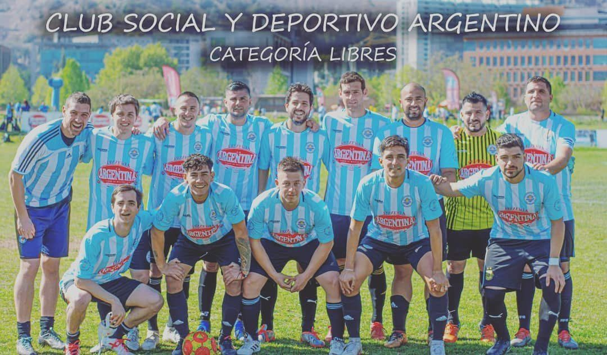

"No buscábamos solo fundar un club. Buscábamos crear un hogar."
Hablar de nuestro Club es hablar de familia, pasión, competencia y un firme compromiso con la comunidad. Somos una organización sin fines de lucro, fundada el 15 de febrero de 2019, que fomenta el deporte y la vida social, y une la cultura argentina con la chilena a través del fútbol.
Nadie nos regaló nada: el Club lo construimos entre todos, sin cargos directivos pagos.

Realizar y desarrollar el deporte como herramienta de transformación, educación en valores e integración social, poniendo a la familia como pieza fundamental.
Ser el mejor espacio de desarrollo deportivo, social y personal.
Un grupo de argentinos en Chile se junta con una idea: no fundar solo un club, sino crear un hogar. Ese día se presentó el proyecto.
Salimos a la cancha por primera vez con la camiseta celeste y blanca y el primer escudo: "Forjados de gloria".
En plena pandemia armamos cajas de alimentos para familias de la Escuela Técnica Las Nieves, en Puente Alto, y colaboramos con la olla popular de Casas Viejas.
Cada fin de temporada nos juntamos con familias, sponsors y amigos para entregar los reconocimientos que votan los socios.
Presentamos la camiseta con homenaje a la tercera estrella y el club de beneficios para socios.
Presentamos la indumentaria 2026 con TDeportes y estrenamos bandera con Pizzería Popular, nuestro sponsor principal.
Si sos argentino en Chile, o simplemente te gusta cómo vivimos el fútbol, hay lugar para vos.
Sumate